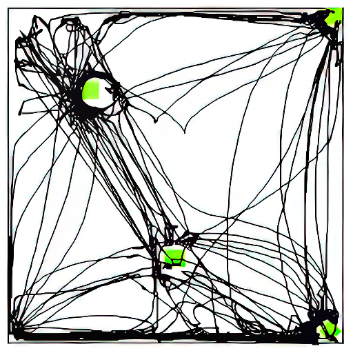
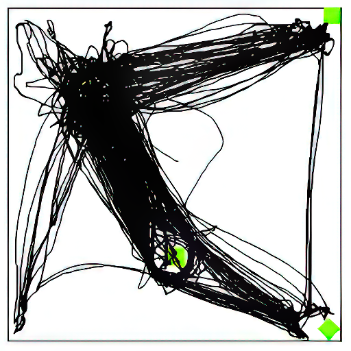

AN OPEN-SCIENCE VIRTUAL LIBRARY FOR BEHAVIORAL PERFORMANCE IN STANDARDIZED CONDITIONS
Twenty-nine datasets, collected over fifteen years — searchable as one big dataset.
The Szechtman Lab Collection holds nearly two decades of open-field behavioral trials from an animal model of OCD. A session-centric annotation makes every trial an independent, fully-described unit — queryable together across experiments and years.
Find, assemble, and analyze open-field behavioural sessions as one big dataset.


From study-centric to session-centric
Traditionally, behavioral data are nested inside one study (Study → Groups → Subjects → Sessions), which makes them hard to reuse across experiments. Here, each session is treated as a discrete event, described by its own metadata under the four headings of a Methods section in a behavioral neuroscience research paper.
That single shift is what lets sessions from different studies be queried together on shared parameters — turning 29 separate deposits into one functional library.
Based on Szechtman, Dvorkin-Gheva & Gomez-Marin, GigaScience (2022).
Every session is described under four Methods headings, then queried as one unit.
The four annotation headings
Apparatus
Open-field ID, object-pattern configuration, lighting.
Subjects
Rat ID, brain-manipulation status, body weight, early-life handling.
Treatment
Drug, dose, injection number, brain region / lesion / sham.
Procedure
Session type, tester, date & time, environment.
Three ways in
The library is one site with three connected zones. Newcomers can follow them in order; returning researchers jump straight to what they need.
Understand
Learn what the collection is and how the session-centric idea works — and see what's inside.
- · The concept & annotation schema
- · Overview of the holdings
- · How to cite & reuse
For newcomers & would-be replicators →
Explore & Take
Filter the sessions you want — by drug, dose, brain region, and more, or just ask in plain English — then take the data with you.
- · Search facets + natural-language query
- · Build & save a named set
- · Export files, metadata & summary stats
For ML researchers, students & analysts →
Visualize & Analyze
See and study your selected sessions — from a synchronized video+track player to publication-style figures.
- · Video + locomotion-track player
- · Path-plot collages & track views
- · Tucci & Ballester graphs from measures
For behavioral-neuroscience and OCD researchers →
The thread that connects them: a selected set of sessions you build in 2 and carry into 3.
The raw data live in Canada's Federated Research Data Repository (FRDR) under the Szechtman Lab Collection. This library is a portal to that repository — it helps you find and assemble data; FRDR holds the files.